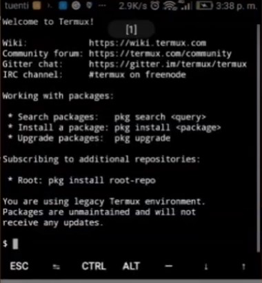
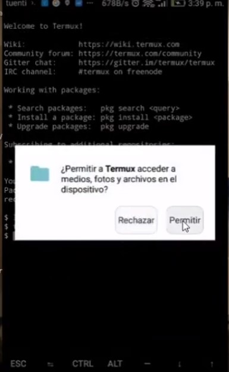
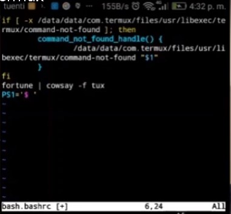
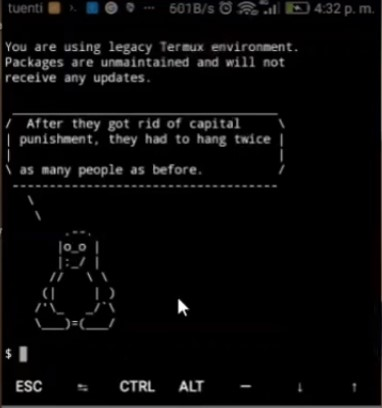
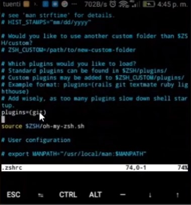
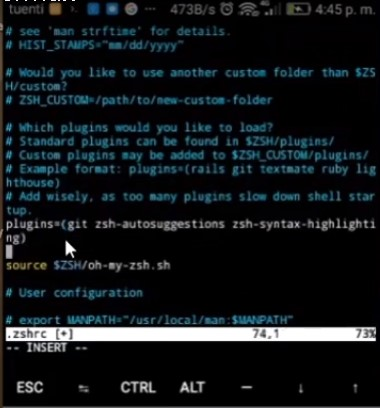
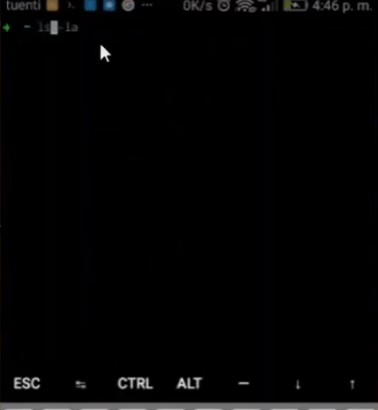

Personalizando Termux
Termux es, en definitiva, un emulador de terminal para nuestro Android que nos permitirá , por medio de una shell, la ejecución de comandos Linux.

Con APT-SETUP-STORAGE
- apt update
- apt upgrade
Instalamos RUBY
- apt install ruby
- gem install lolcat (le da color a cualquier cosa del terminal)
- apt-get install cowsay figlet fortune
Vamos a editar el archivo motd, que se encuentra en la ruta ../usr/etc, pademos hacer uso de editor de texto vim o nano (sino lo tienes instalado puedes instalarlo con apt install nano vim)
- cd ../usr/etc
- mv motd motd-bk (no lo elimino, por si queremos recuperarlo)
En la misma carpeta editamos el archivo bash.basrc (usare el editor de texto vim)

y como resultado obtendremos, un terminal mas personalizado

...Pero podemos hacer aun mas amigable nuestro terminal. Vamos a instalar la shell zsh
- apt install zsh -y
- apt install git -y (para poder clonar los scripts a usar del zsh)
- apt install curl (para las peticiones del prgrama)
Volvemos a HOME, y nos clonamos el script para instalar el zsh.
- sh -c "$(curl -fsSL https://raw.githubusercontent.com/robbyrussell/oh-my-zsh/master/tools/install.sh)"
- git clone https://github.com/zsh-users/zsh-syntax-highlighting.git $ZSH_CUSTOM/plugins/zsh-syntax-highlighting
Vamos a editar el archivo ~/.zshrc, hare uso de vim. buscamos la linea donde dice plugins=(git )

y pegamos la siguiente linea.
- zsh-autosuggestions zsh-syntax-highlighting

Listo!! ya casi finalizamos.

Al abrir nueva ventana de termux, podemos ver que la terminal nos indica con rojo si escribimos un comando que no existe, y tiene un historial de los ultimos comandos utilizados.
Tambien puedes verlo en mi canal Youtube
¿Te ha gustado este artículo? Si quieres, puedes ayudarme a escribir el siguiente artículo. invitándonme a un rico café.
Pentesting